Chatter Customization
Incipient Productivity SuiteChatter Customization & Workspace Controls
Configure chatter behavior per user and per model with granular administrative controls. Hide the "Send Message" button to restrict customer email dispatch, and add a toggle button to collapse the chatter panel—unlocking full-width view for complex data forms.
Need Setup Assistance?
Free pre-sales consultation and lifetime support for every installation.
Contact Technical SupportBuilt for Focused Form Data Entry & Communication Control
Eliminate chatter screen clutter and restrict customer-facing messaging per user
Hide Send Message
Per-User & Model SecurityHide the "Send Message" action button for specific users on specific business models, preventing unauthorized client emails while preserving internal log notes.
Collapsible Chatter
Maximize Screen SpaceIntegrate a smooth collapse/expand toggle on the chatter topbar to shrink the chatter panel and allow the main form sheet to expand to 100% full width.
State Persistence
User & Model MemoryAutomatically saves and restores the collapsed or expanded state in local storage for each user and model, ensuring a personalized layout across sessions.
The Chatter Workspace Transformation
How Chatter Customization solves Odoo screen clutter and unauthorized communication
Cluttered Layout & Loose Control
- ✕ Side-by-side chatter panel consumes up to 50% of screen width, forcing long forms and order lines into narrow, cramped views.
- ✕ Any user with chatter access can accidentally post customer-facing "Send Message" emails on delicate records like Invoices or Sales Orders.
- ✕ Users must repeatedly look past unnecessary chatter threads on forms where only data entry is needed.
Tailored Control & 100% Screen Space
- ✓ 1-Click topbar button collapses chatter down to 50px, instantly freeing full screen width for forms and order tables.
- ✓ Granular configuration allows hiding "Send Message" for specific users while keeping internal Log Notes and Activities intact.
- ✓ Remembers collapsed state per user and model with zero database latency via pre-loaded session cache.
Comprehensive Feature Suite
12 Core capabilities engineered for seamless chatter control & focused workspace
User-Specific Restraint
Hide the "Send Message" button exclusively for selected users, avoiding inadvertent or unvetted external client communication.
Model-Level Targeting
Apply restrictions selectively to any mail-thread model (Sales Orders, Invoices, Purchase Orders, CRM Leads, Tasks).
1-Click Collapsible Chatter
Toggle chatter visibility on-the-fly via a neat topbar button with native FontAwesome expand and compress iconography.
Full-Width Form Expansion
Automatically stretches the form sheet to 100% full width when the side chatter is collapsed, giving maximum room for order lines and data tables.
Preserved Internal Notes
Even when "Send Message" is hidden, users retain full access to "Log Note" and activity scheduling for smooth internal teamwork.
Smart State Persistence
Remembers whether the user preferred chatter collapsed or open per model in local storage, preserving preferences across sessions.
Side & Bottom Layout Support
Elegantly handles both Odoo's side-by-side aside chatter and bottom chatter layouts with responsive CSS styling.
Duplicate Rule Prevention
Python ORM validation constraint strictly prevents overlapping configuration rules for the same model and users.
Zero-Lag Session Caching
Pre-loads user configuration in session_info, providing instantaneous client-side UI rendering without recurring SQL queries.
Clean OWL Component Patch
Crafted with modern Odoo 19 OWL JavaScript and XML patching standards without brittle view overrides or hacks.
Edition Compatibility
100% compatible with Odoo Community Edition, Enterprise Edition, and Odoo.sh cloud deployments.
Zero External Dependencies
Pure native Odoo architecture requiring zero external Python libraries, third-party microservices, or complex setup.
Step-by-Step Visual Walkthrough
How Chatter Customization works seamlessly inside Odoo
Target User Setup: Chatter User A
Configure standard internal users who need restricted customer communication permissions (e.g., Chatter User A with Sales: User: All Documents access).
Setting up individual user profiles ensures granular control over who can post outward-facing messages on document threads.
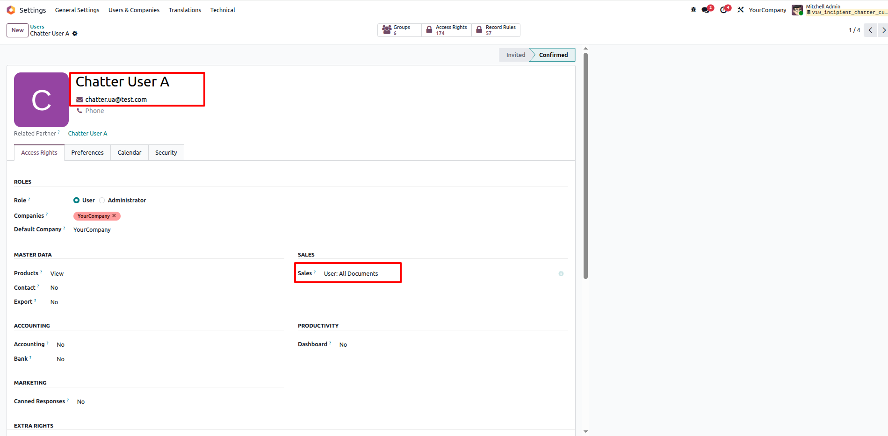
Comparison User Setup: Chatter User B
Set up another user (Chatter User B) who will retain full communication permissions without chatter restrictions.
This makes it easy to verify that restriction policies strictly apply only to specifically selected users and models.
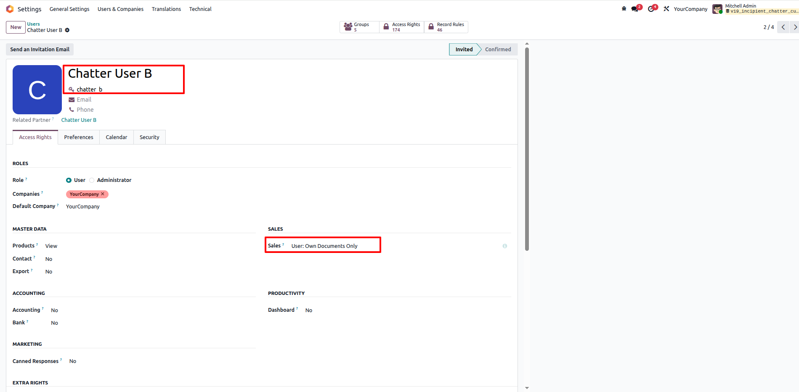
Quick Access via Command Palette
Easily access the configuration screen by typing Chatter Configuration in the command palette (Ctrl + K) or via Settings > Technical > Chatter Configuration.
Direct navigation ensures administrators can quickly tune communication and collapse rules anytime.
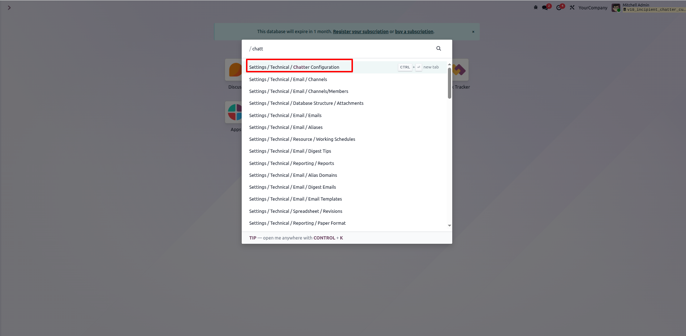
Hide 'Send Message' on Contact Model
Create a rule specifying the target model (e.g., Contact / res.partner), assign Chatter User A, and check Hide Send Message.
Only mail thread enabled models can be selected, guaranteeing compatibility and preventing invalid configurations.
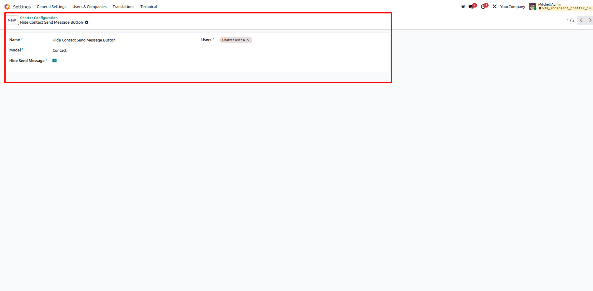
Hide 'Send Message' on Sales Orders
Set up another configuration rule on Sales Order (sale.order) for Chatter User A with Hide Send Message activated.
You can define customized rules across various business models including Sales Orders, Invoices, Contacts, and CRM Leads.
Built-in Duplicate Rule Validation
The system includes built-in duplicate prevention. Attempting to create duplicate rules for the same model and user automatically triggers a clear validation error.
This integrity check prevents conflicting chatter behavior and ensures robust configuration management.
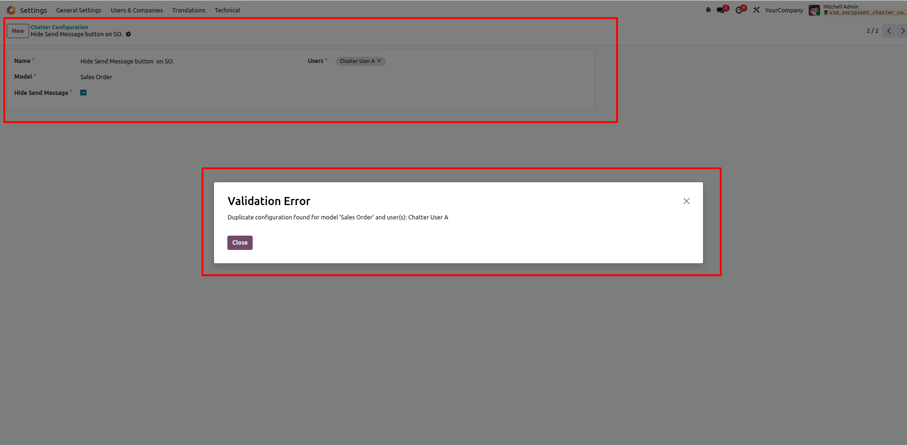
'Send Message' Hidden for Restricted User
When Chatter User A opens a Sales Order record, the "Send Message" button is completely hidden from the chatter header.
User A can still log internal notes and schedule activities without risk of sending unintended messages to clients.
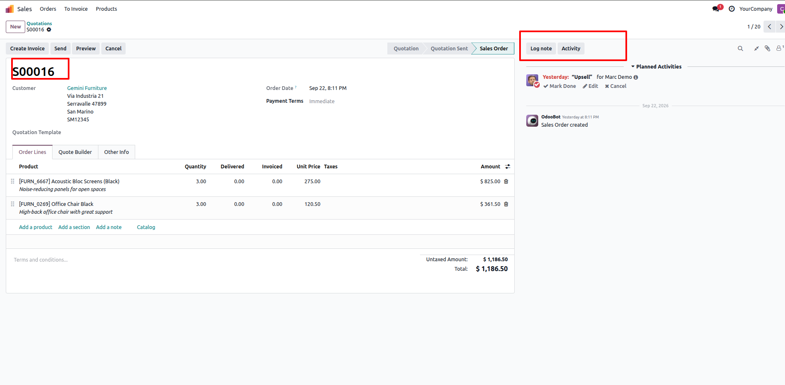
Full Access Retained for Unrestricted Users
When Chatter User B opens a Sales Order, the "Send message" button remains visible and fully accessible as expected.
Demonstrates precise per-user restriction while other team members continue their standard communication workflow undisturbed.
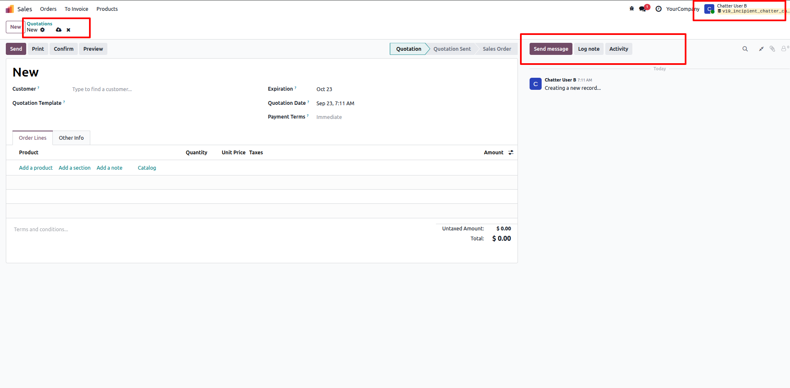
Enable Collapsible Chatter Panel
In the Chatter Configuration form, activate the Enable Collapse option for the target model.
This injects an interactive collapse/expand toggle button into the top right header of the Chatter panel on record views.
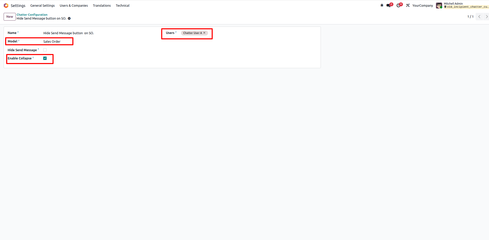
Interactive Collapse Button in Chatter Header
The collapse toggle button appears at the top-right corner of the Chatter panel on the document form view.
Users can click this button at any time to instantly minimize the chatter pane when working on data-heavy records.
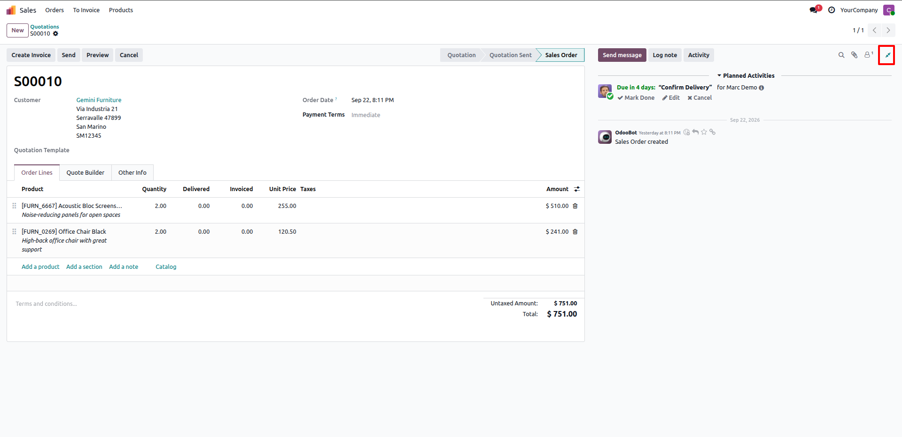
Collapsed Chatter with Maximized Form View
Clicking the button smoothly collapses the chatter down to a slim vertical bar, providing full screen width for order lines and document data.
The user preference is remembered per model and session via localStorage, preserving their layout choice automatically.
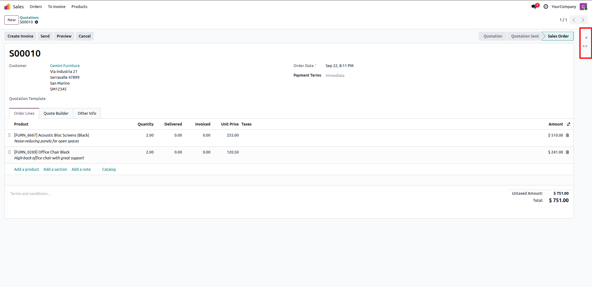
Disable Collapsible Option
Administrators can easily disable the collapsible functionality at any time by unchecking Enable Collapse in the configuration record.
Provides full flexibility to keep standard Odoo chatter behavior wherever collapsible panels are not desired.
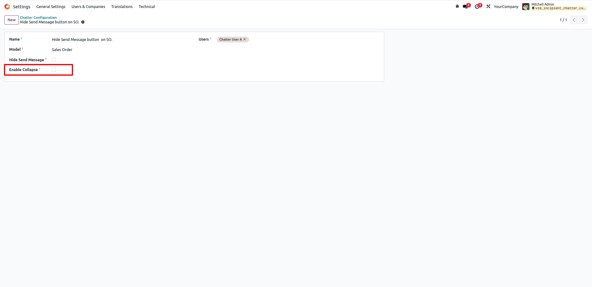
Standard Chatter Header Restored
With "Enable Collapse" turned off, the Chatter panel returns to standard view without the collapse toggle button.
Demonstrates seamless toggling between customized chatter behavior and default Odoo thread styling.
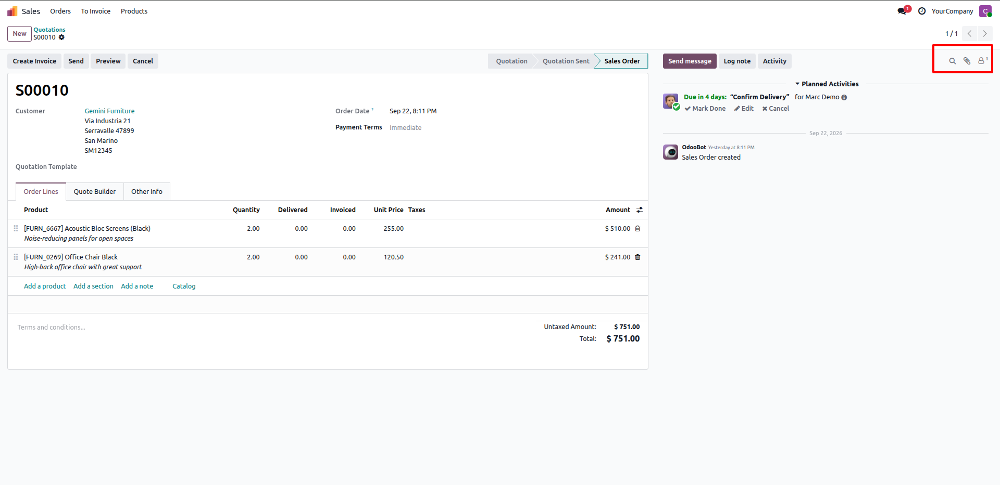
Frequently Asked Questions
Click any question below to expand or collapse details